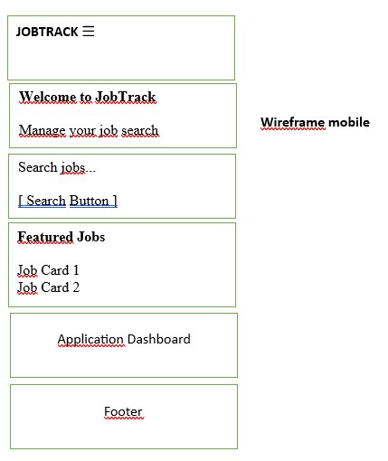
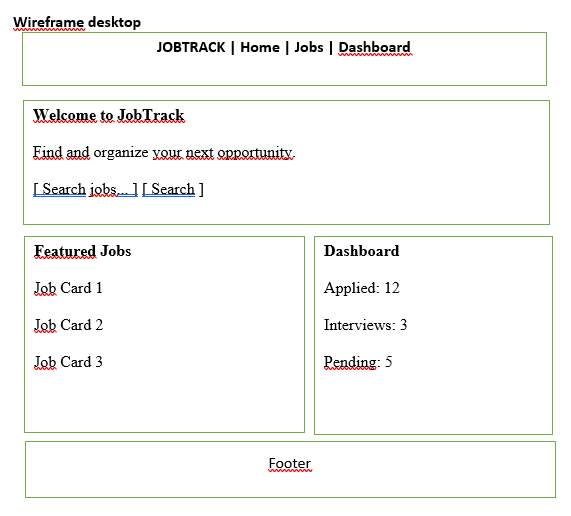

Site Name
JobTrack combines "Job" and "Track" to represent a platform that helps users organize and monitor their job search journey.
Site Purpose
JobTrack helps users find job opportunities, save interesting positions, register applications, and track their progress.
Scenarios
- How can I find job opportunities that match my skills and interests?
- How can I save job opportunities and track submitted applications?
- How can I organize applications and monitor their progress?
Color Scheme
Dark Navy: #1E293B
Primary Blue: #2563EB
Light Background: #F8FAFC
White: #FFFFFF
Typography
Poppins will be used for headings and navigation.
Roboto will be used for paragraphs, forms, and job information.
Wireframes
Mobile View

Desktop View
